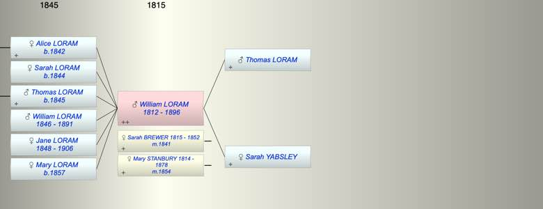

| [Index] |
| William LORAM (1812 - 1896) |
| butcher |
|  |
| b. 1812 at Alphington |
| m. (1) 22 Sep 1841 Sarah BREWER (1815 - 1852) at Exeter |
| m. (2) 1854 Mary STANBURY (1814 - 1878) |
| d. Mar 1896 at Alphington aged 84 |
| Near Relatives of William LORAM (1812 - 1896) | ||||||
| Relationship | Person | Born | Birth Place | Died | Death Place | Age |
| Father in Law | William BREWER | 1779 | 1827 | Exminster | 48 | |
| Mother in Law | Anna Maria ADAMS | 1781 | Heavitree | 10 Aug 1840 | Heavitree | 59 |
| Father in Law | John STANBURY | |||||
| Mother in Law | Mary | |||||
| Father | Thomas LORAM | |||||
| Mother | Sarah YABSLEY | |||||
| Self | William LORAM | 1812 | Alphington | Mar 1896 | Alphington | 84 |
| Wife | Sarah BREWER | 1815 | Exmouth? | 12 Mar 1852 | Alphington | 37 |
| Wife | Mary STANBURY | 1814 | Drewsteignton | 1878 | 64 | |
| Daughter | Alice LORAM | 1842 | Alphington | Y | ||
| Daughter | Sarah LORAM | 1844 | Alphington | Y | ||
| Son | Thomas LORAM | 1845 | Alphington | Y | ||
| Son | William LORAM | 1846 | Alphington | 1891 | Alphington | 45 |
| Daughter | Jane LORAM | 1848 | Alphington | 11 Nov 1906 | Alphington | 58 |
| Daughter | Mary Stanbury LORAM | 1857 | ||||
| Son in Law | Henry PHYSICK | 1839 | 28 Sep 1893 | Exeter | 54 | |
| Daughter in Law | Elizabeth J UNKNOWN | 1844 | Teignmouth | Y | ||
| Granddaughter | Alice L PHYSICK | 1865 | Alphington | |||
| Granddaughter | Sarah Jane PHYSICK | 1866 | Alphington | |||
| Grandson | WIlliam Henry PHYSICK | 1868 | Alphington | |||
| Granddaughter | Annie Mary PHYSICK | 1869 | Alphington | |||
| Granddaughter | Ellen M PHYSICK | 1871 | Alphington | |||
| Granddaughter | Ellen Maud PHYSICK | 1871 | Alphington | |||
| Grandson | Frederick G L PHYSICK | 1873 | Alphington | |||
| Grandson | Henry Arthur E PHYSICK | 1874 | Alphington | |||
| Granddaughter | Bertha E PHYSICK | 1877 | Alphington | |||
| Granddaughter | Winifred Agnes PHYSICK | 1879 | Alphington | |||
| Granddaughter | Mary Stanbury PHYSICK | 1881 | Alphington | |||
| Granddaughter | Rose A LORAM | 1864 | Teignmouth | Y | ||
| Granddaughter | Catherine M LORAM | 1866 | Teignmouth | Y | ||
| Granddaughter | Jane LORAM | 1871 | Twerton On Avon | Y | ||
| Granddaughter | Mary Elizabeth LORAM | 1873 | Bath | Y | ||
| Grandson | William Thomas LORAM | 1875 | Bath | 1927 | Bradford on Avon | 52 |
| Granddaughter | Flora Ellen LORAM | 1877 | Bath | Y | ||
| Granddaughter | Mabel Louisa LORAM | 1878 | Bath | Y | ||
| Nephew | Frederick BREWER | 16 Sep 1822 | Exminster | 1822 | Exminster | 0 |
| Nephew | Frederck BREWER | 16 Sep 1823 | Exminster | 1909 | Croydon | 86 |
| Nephew | Frank BREWER | 22 Nov 1825 | Exminster | 04 Nov 1895 | Kingston On Thames | 69 |
| Nephew | Lewis BREWER | 13 Mar 1828 | Exminster | 1836 | Exminster | 8 |
| Niece | Ellen BREWER | 20 Apr 1830 | Exminster | 02 Apr 1861 | 30 | |
| Niece | Flora BREWER | 15 Dec 1832 | Exminster | Y | ||
| Niece | Ruth BREWER | 23 Apr 1835 | Exminster | Y | ||
| Nephew | Lewis BREWER | 1839 | Exminster | 31 Mar 1906 | Redbridge, Hampshire | 67 |
| Niece | Ann Maria LANGSFORD | 1824 | Alphington | 1900 | Croydon | 76 |
| Nephew | Edward BREWER | 03 Feb 1837 | 20 Jun 1868 | Alphington | 31 | |
| Niece | Ann BREWER | 03 Jan 1839 | Alphington | 25 Nov 1841 | Alphington | 2 |
| Nephew | James BREWER | 23 Oct 1842 | Alphington | 1885 | Alphington | 43 |
| Niece | Amelia BREWER | 27 Oct 1846 | 05 Nov 1871 | 25 | ||
| Nephew | Samuel BREWER | 1848 | Alphington | 1901 | Alphington | 53 |
| Niece | Charlotte BREWER | 26 Jul 1851 | Alphington | 1940 | Pinhoe | 89 |
| Niece | Jane BREWER | 03 Dec 1854 | Alphington | Y | ||
| Nephew | William BREWER | 03 Dec 1854 | Alphington | 07 Aug 1912 | 57 | |
| Niece | Francis BREWER | 1835 | Exminster | Y | ||
| Niece | Charles BREWER | 30 Apr 1841 | Exminster | |||
| Niece | Ann BREWER | 1844 | Alphington | Y | ||
| Nephew | Henry BREWER | 1846 | Alphington | Y | ||
| Niece | Rebecca BREWER | 1849 | Alphington | Y | ||
| Nephew | Andrew BREWER | 07 Jun 1850 | Alphington | 02 Jul 1931 | 81 | |
| Nephew | Samulel Watts BREWER | 29 Oct 1837 | Exminster | 1915 | 78 | |
| Niece | Patience BREWER | 1840 | Starcross | 1871 | 31 | |
| Niece | Harriet Watts BREWER | 1842 | Starcross | Y | ||
| Nephew | George BREWER | 1843 | Starcross | 1875 | 32 | |
| Niece | Mary Jane BREWER | 1845 | Starcross | 1845 | Starcross | 0 |
| Nephew | Albert BREWER | 1848 | Starcross | 1848 | Starcross | 0 |
| Niece | Ruth BREWER | 10 Dec 1849 | Starcross | 31 Mar 1921 | Newton Abbott | 71 |
| Nephew | Charles BREWER | 1851 | Starcross | |||
| Nephew | Daniel BREWER | 29 Mar 1853 | Teignmouth | |||
| Nephew | Solomon BREWER | 1855 | Teignmouth | |||
| Nephew | William Henry BREWER | 1857 | Teignmouth | |||
| Niece | Bertha BREWER | 1859 | Teignmouth | 06 Apr 1899 | Teignmouth | 40 |
| Niece | Blanche BREWER | 30 Jul 1860 | Teignmouth | 1916 | Australia | 56 |
| Niece | Mary DAWE | |||||
| Nephew | Thomas DAWE | 1842 | Exeter | |||
| Nephew | John DAWE | 1844 | Exeter | |||
| Nephew | Henry DAWE | 1846 | Exeter | |||
| Nephew | Frank DAWE | 1848 | Exeter | |||
| Niece | Susan DAWE | 1850 | Broadclyst | |||
| Niece | Isaac DAWE | 1853 | Broadcylst | |||
| Niece | Anne DAWE | 1854 | Broadclyst | |||
| Nephew | William Henry REEVE | 1837 | Heavitree | 1917 | 80 | |
| Niece | Elizabeth REEVE | 1839 | Heavitree/Wonford, Devon | 25 Jun 1911 | Bath | 72 |
| Niece | Alice Sarah HURLEY | 13 Nov 1853 | Alphington | 1939 | 86 | |
| Nephew | Alfred Robert HURLEY | 14 Aug 1859 | Alphington | 1935 | 76 | |
| Brother in Law | Thomas BREWER | 1801 | Heavitree | 07 Jan 1861 | 60 | |
| Sister in Law | Anna Maria BREWER | 06 Dec 1803 | Heavitree | 1888 | Lambeth | 85 |
| Brother in Law | William BREWER | 23 Jul 1806 | Heavitree | 23 Aug 1851 | 45 | |
| Brother in Law | James BREWER | 1807 | Exminster | 11 Apr 1881 | 4 Victoria Cottages, Parr St Exeter | 74 |
| Brother in Law | John C BREWER | 14 Jul 1811 | Exminster | 1889 | Petersfield | 78 |
| Brother in Law | Charles BREWER | 18 Mar 1813 | Exminster | 1894 | 81 | |
| Sister in Law | Mary BREWER | 1817 | Exminster | 31 Dec 1861 | 44 | |
| Sister in Law | Selina BREWER | 1818 | Exminster | 1899 | 81 | |
| Sister in Law | Charlotte BREWER | 19 Aug 1820 | Exminster | 29 Oct 1883 | 63 | |
| Events in William LORAM (1812 - 1896)'s life | |||||
| Date | Age | Event | Place | Notes | Src |
| butcher | |||||
| 1812 | William LORAM was born | Alphington | |||
| 27 Dec 1812 | Christening | Alphington | |||
| 22 Sep 1841 | 29 | Married Sarah BREWER (aged 26) | Exeter | Note 1 | |
| 1842 | 30 | Birth of daughter Alice LORAM | Alphington | bap 8 Mar 1842 | |
| 1844 | 32 | Birth of daughter Sarah LORAM | Alphington | bap 4 Jun 1843 | |
| 1845 | 33 | Birth of son Thomas LORAM | Alphington | bap 9 Jun 1844 | |
| 1846 | 34 | Birth of son William LORAM | Alphington | 23 Nov 1845 | |
| 1848 | 36 | Birth of daughter Jane LORAM | Alphington | Note 2 | |
| 12 Mar 1852 | 40 | Death of wife Sarah BREWER (aged 37) | Alphington | ||
| 1854 | 42 | Married Mary STANBURY (aged 40) | |||
| 1857 | 45 | Birth of daughter Mary Stanbury LORAM | |||
| 1878 | 66 | Death of wife Mary STANBURY (aged 64) | |||
| 1891 | 79 | Death of son William LORAM (aged 45) | Alphington | Note 3 | |
| Mar 1896 | 84 | William LORAM died | Alphington | Note 4 | |
| Personal Notes: |
|
1861 census . William Loram was at the Bell Inn, Alphington aged 48, innkeeper, born Alphington with Mary, 47, wife born Drewsteignton; Alice, 19, daughter; Sarah, 17, Thomas, 15, son; William 16, son; Jane, 13, daughter; Mary S, 4, daughter – all born Alphington. Mary S would have been born around 1857 six years after William’s wife Sarah had died. Moreover Jane’s tombstone describes her as the youngest daughter of William and Sarah so William must have remarried and Mary S would have been a daughter of his second marriage.
Mary S Loram must be Mary Stanbury Loram whose birth was registered St Thomas March 1857 5b 67 and she was named after her mother Mary Stanbury whose marriage to William Loram was registered St Thomas Dec 1854 5b 115 . 1871 census William and his family were living at the Bell Inn, High Street, Alphington: William Loram, 58, Inn Keeper, born Alphington; Mary, 57, wife assistant, born Drewsteignton; Sarah, 27, daughter, assistant; Jane, 23, daughter, assistant; William, 25, son, assistant; Mary, 14, scholar; all born Alphington; and Charlotte Rossiter, 33, cousin , visitor, born St Thomas. Next door was Thomas Langsford, 77, farmer, born Alphington. 1881 census In the 1881 census William and his family were living at the Bell Inn, High Street, Alphington. He was a widower aged 67 and described as Inn Keeper & Farmer of 64 Acres Employing 3 Men. William’s daughters Sarah 37, Jane 33 and his son William were still at home and all unmarried. . As eldest son he may have inherited the farm from his father. Interesting in the 1851 census Richard Loram (who may have been a relative) was listed as farmer of 70 acres employing 3 labourers in Alphington. William might have inherited or bought Richard’s farm 1891 census living at Brooklands, Alphington: William Loram, head, 78, retired butcher; Sarah, daughter, 48, single; Jane, 42, single; Mary S? Physick, 10, granddaughter – all born Alphington 1896 March, William Loram died aged 82 (headstone at Alphington). |
| Created on a Mac™ using iFamily for Mac™ on 15 Sep 2023 |